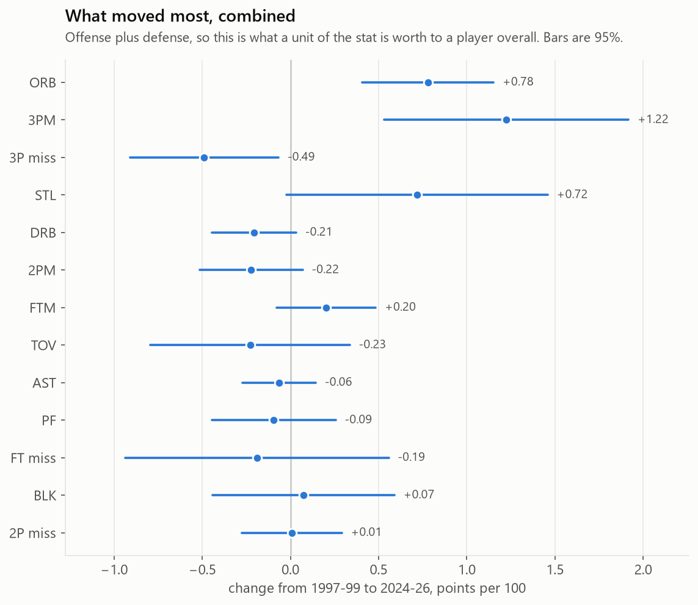
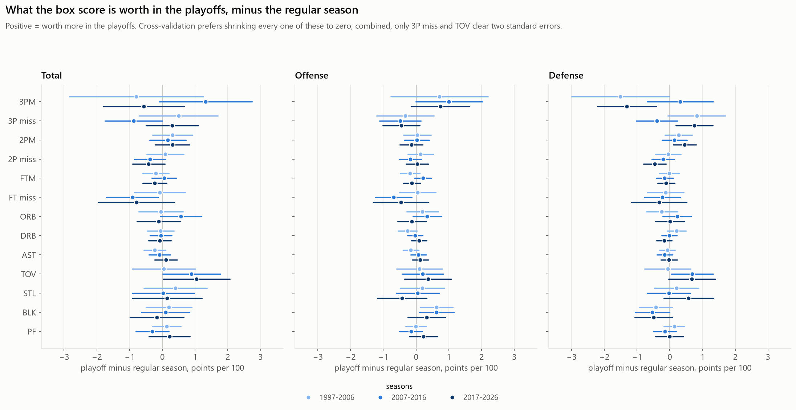
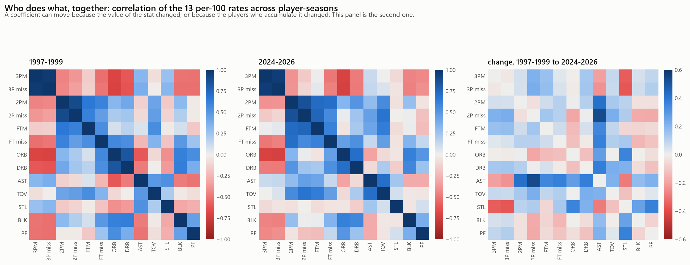

Thirty years of NBA players, rated by what the box score knows and what it misses
One ridge regression per three-season window. The box score enters as unpenalized fixed effects
beside ridge-penalized player offense and defense effects, fit jointly by Henderson's mixed model
equations, so a player's rating and the coefficients land on the same scale: points per 100
possessions. Every player gets one effect per three-year window. Defense is flipped so positive is
good on both sides.
The leaderboard
A rating is three things added together: what the box score says about you, a gradient-boosted
correction for where the box score's straight-line pricing breaks down, and what the on-court
margin says on top of both. Switch to offense and defense to see the same totals split by
side, or to what the box score misses for the players the margin disagrees with most.
What the box score has been worth
Each coefficient is the points per 100 possessions that one unit per 100 of that stat is worth,
holding the other twelve fixed. The tabs pick the stat; bands are 95%.

The ten coefficients that moved most from 1997-99 to 2024-26, with 95% intervals on the change.

The playoff block: how much each coefficient differs in the playoffs, by era third.

Who accumulates what, together. A coefficient can move because the value changed or because the players did.
Method, briefly
Data. Every regular-season and playoff game from 1996-97 to 2025-26, reconstructed from
stats.nba.com play-by-play into possessions with the ten players on the floor. Points reconcile to
the box score in every game, and 99.9% of possessions have five players a side.
Cross-fitted rates. Each season's games are split in half. The coefficients fit on one
half use box-score rates computed only from the other, so a coefficient never sees the box score of
the stints it is fit on. Using full-season rates inflates the three-point coefficient by more than
seven standard errors.
One λ for the whole era, chosen once on two windows by cross-validation and REML,
so shrinkage cannot manufacture drift.
The nonlinear correction is a gradient-boosted model on the ridge residual, pooled over
all ten windows, cross-fitted so a player never scores himself, shrunk by the slope of its own
out-of-fold prediction, and stripped of any linear component so it can only supply curvature. On
held-out games it moves the calibration slope of the prior for low-minute players from 0.84 to 0.97
on defense while leaving starters unchanged.
Standard errors are the model's, about 10% conservative against a game-level Bayesian
bootstrap.